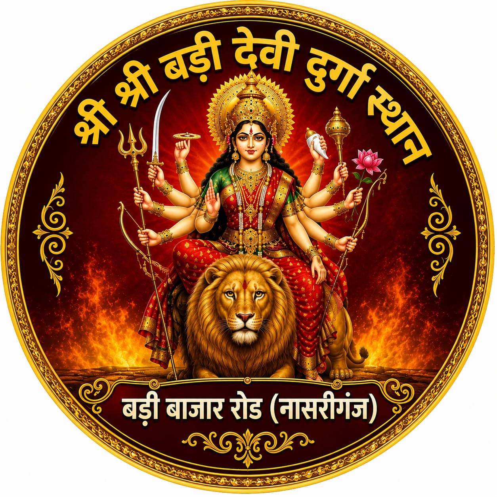
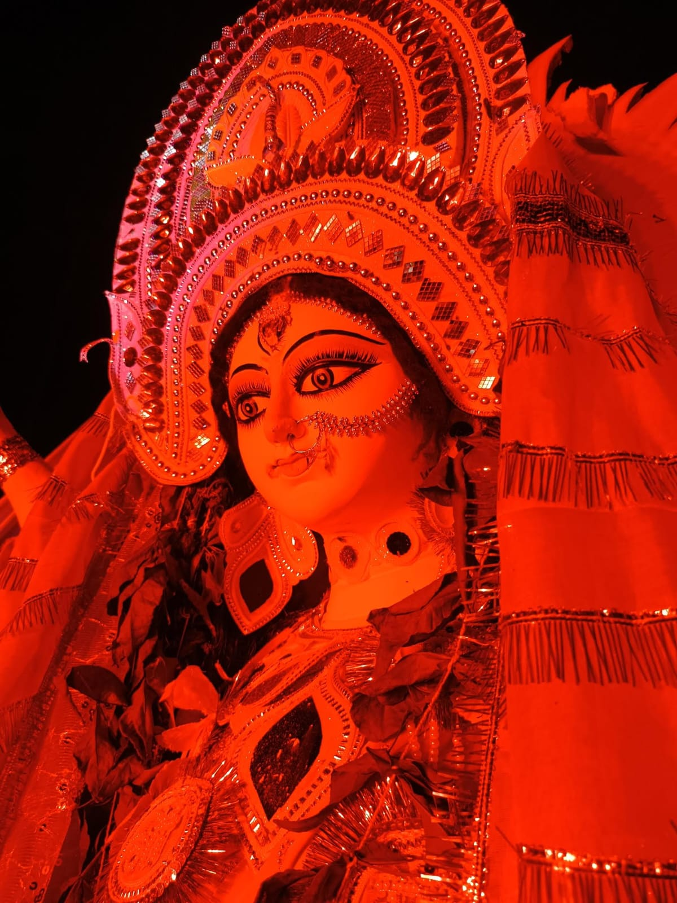
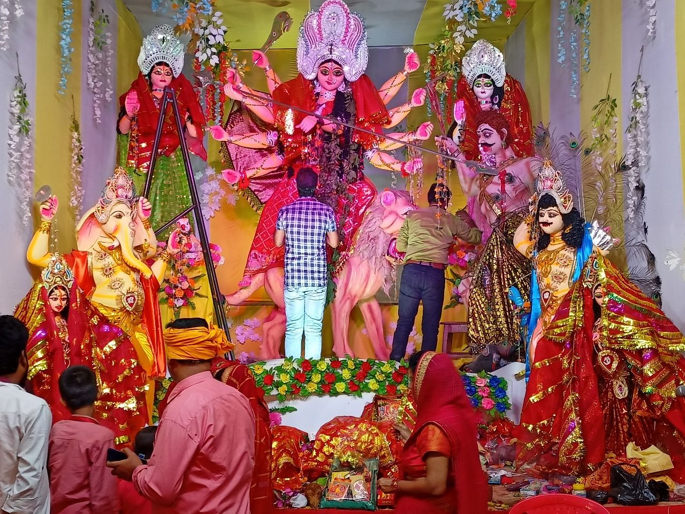
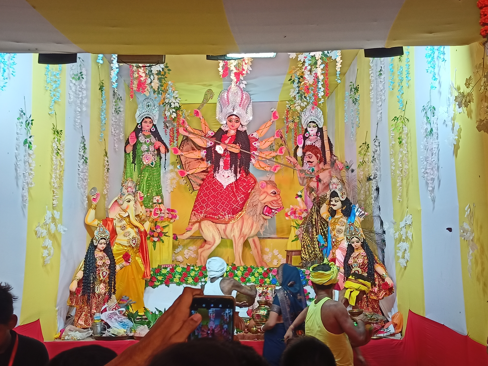
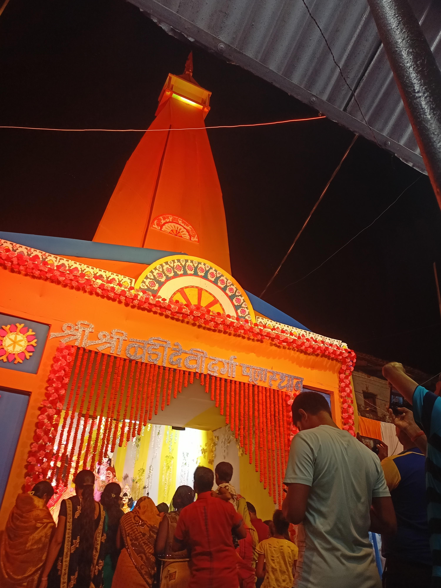
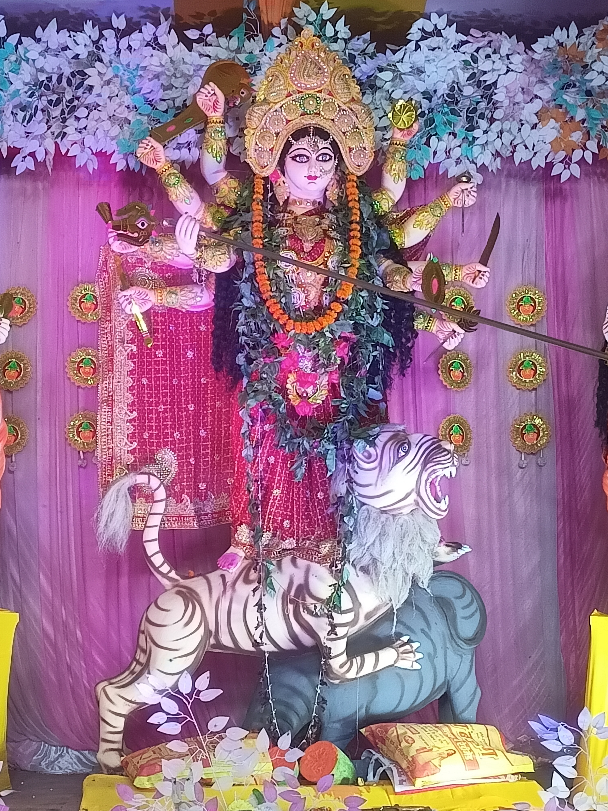

🙏 Welcome to
श्री श्री बड़ी देवी दुर्गा पूजा स्थान
Celebrating Tradition, Devotion & Community
Welcome to the official website of our Durga Puja. Explore our traditions, celebrations, decorations, memorable moments and community facilities.
About Our Puja
English
Shri Shri Badi Devi Durga Puja Sthan has a long-standing tradition of devotion, faith, and community celebration.
According to the memories shared by our parents and elders, many years ago, a doctor from Bengal came to live in our hometown. He introduced and started the Durga Puja celebration at the place where our Puja is held today.
Since then, this tradition has continued every year, with the community coming together with renewed energy, devotion, and joy.
In 2025, our Puja completed its 137th year of celebration, marking more than a century of faith and tradition passed down through generations.
One of our cherished traditions is the Jalbhari Yatra. On the seventh day of the festival, members of the community go to the river to bring sacred water. After returning and completing the required rituals, the faces of the Goddess and Gods are ceremonially revealed.
On the 7th, 8th, and 9th days, our committee also organizes Prasad distribution and Shastra-Pradarshan.
Our committee organizes Durga Puja every year and strives to preserve and follow the rituals and traditions handed down from the past.
हिंदी
श्री श्री बड़ी देवी दुर्गा पूजा स्थान आस्था, भक्ति, परंपरा और सामुदायिक एकता की एक दीर्घकालीन परंपरा का प्रतीक है।
हमारे माता-पिता एवं बुजुर्गों से मिली जानकारी के अनुसार, बहुत वर्षों पहले बंगाल से आए एक डॉक्टर हमारे गृहनगर में रहते थे। उन्होंने हमारे गृहनगर में वर्तमान पूजा स्थल पर पहली बार दुर्गा पूजा उत्सव की शुरुआत की।
तभी से यह परंपरा हर वर्ष निरंतर चली आ रही है और आज भी पूरा समुदाय नई ऊर्जा, भक्ति और उत्साह के साथ इस पर्व को मनाता है।
वर्ष 2025 में हमारी पूजा के 137 वर्ष पूरे हुए , जो पीढ़ियों से चली आ रही आस्था और परंपरा की एक गौरवपूर्ण यात्रा को दर्शाता है।
हमारी पूजा की प्रमुख परंपराओं में से एक जलभरी यात्रा है। उत्सव के सातवें दिन समुदाय के लोग नदी से पवित्र जल लाने के लिए जाते हैं। नदी से वापस आने के बाद आवश्यक पूजा एवं धार्मिक अनुष्ठान किए जाते हैं और इसके पश्चात देवी एवं देवताओं के मुख का विधिवत अनावरण किया जाता है।
पूजा के सप्तमी, अष्टमी और नवमी के दिन प्रसाद वितरण तथा शस्त्र-प्रदर्शन का आयोजन भी किया जाता है।
हमारी समिति प्रत्येक वर्ष दुर्गा पूजा का आयोजन करती है और अतीत से चली आ रही धार्मिक रीति-रिवाजों एवं परंपराओं का पालन करते हुए इस पवित्र उत्सव को श्रद्धा, एकता और उत्साह के साथ मनाती है।
Completed in 2025
Photo Gallery
Explore memorable moments from our Durga Puja celebrations.





Festival Videos
Watch memorable moments from our Durga Puja celebrations, including festival events and Visarjan.
Durga Puja Festival & Visarjan 2022
Visitor Facilities
We are committed to providing a safe and comfortable experience for all visitors during the Puja celebrations.
Drinking Water
Clean drinking water is available for visitors during the Puja celebrations.
✓ AvailableFirst Aid
First-aid assistance is available for visitors whenever required.
✓ AvailableSecurity
Security arrangements are provided to help ensure the safety of visitors.
✓ AvailableFeedback & Suggestions
Your feedback helps us improve our Puja celebrations and visitor facilities.
✅ Thank you for your valuable feedback!
Our Location
Visit us at Shri Shri Badi Devi Durga Puja Sthan.